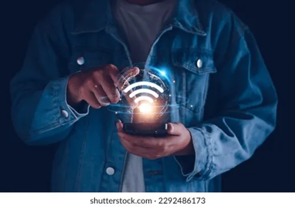

Memahami Jaringan & Internet
Bagaimana dunia terhubung melalui pertukaran data digital.

Sumber: shutterstock.com
Apa itu Jaringan Komputer?
Jaringan komputer adalah sistem yang menghubungkan dua atau lebih perangkat komputer untuk berbagi sumber daya, data, dan komunikasi. Tanpa jaringan, setiap komputer akan bekerja secara terisolasi. Internet sendiri adalah jaringan komputer terbesar di dunia yang menghubungkan jutaan perangkat secara global.
Jenis-Jenis Jaringan Berdasarkan Jangkauan
Jaringan komputer diklasifikasikan berdasarkan luas area yang dicakupnya:
- LAN (Local Area Network): Jaringan skala kecil seperti di rumah, kantor, atau sekolah.
- MAN (Metropolitan Area Network): Menghubungkan jaringan dalam satu kota.
- WAN (Wide Area Network): Jaringan skala besar yang mencakup negara atau benua.
- PAN (Personal Area Network): Jaringan pribadi jarak dekat, seperti koneksi Bluetooth antara HP dan headset.
Komponen Pendukung Jaringan
Untuk membangun sebuah jaringan, diperlukan perangkat keras khusus agar data dapat berpindah dengan lancar:
- Router: Mengatur lalu lintas data antar jaringan yang berbeda.
- Switch/Hub: Menghubungkan beberapa perangkat dalam satu jaringan LAN.
- Modem: Mengubah sinyal digital menjadi sinyal analog (dan sebaliknya) untuk akses internet.
- Kabel LAN (UTP): Media transmisi fisik untuk mengirim data melalui kabel.
Manfaat Internet di Era Digital
Internet telah mengubah cara manusia berinteraksi. Manfaat utamanya meliputi kemudahan akses informasi, sarana komunikasi cepat melalui email atau media sosial, hingga mendukung kegiatan ekonomi seperti e-commerce dan perbankan digital.